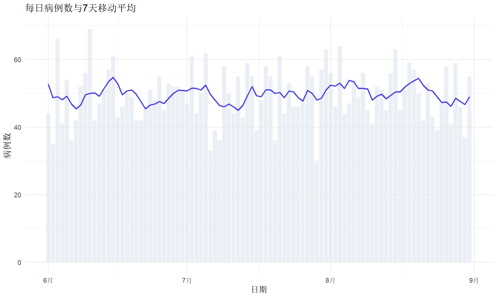

# 安装并加载必要的包
if (!require("lubridate")) install.packages("lubridate")
if (!require("dplyr")) install.packages("dplyr")
if (!require("tibble")) install.packages("tibble")
if (!require("ggplot2")) install.packages("ggplot2")
if (!require("hms")) install.packages("hms")
library(lubridate)
library(dplyr)
library(tibble)
library(ggplot2)
library(hms)日期与时间变量处理完全指南
实用操作
数据处理
日期时间
系统介绍 R 语言中日期时间的处理方法，涵盖 lubridate、hms 等包的使用，帮助你轻松处理各种日期格式转换、计算和可视化需求。
为什么日期时间处理很重要？
在医学和流行病学研究中，日期时间变量无处不在：
- 纵向研究：计算随访时间、观察期长度
- 生存分析：从入组日期到事件发生的时间
- 时间序列：按周/月/季度聚合数据
- 数据清洗：统一多种日期格式
然而，日期时间数据往往是数据清洗中最麻烦的部分。本教程将帮助你系统掌握 R 中的日期时间处理技巧。
R 中的日期时间类型
R 中有三种主要的日期时间类型：
| 类型 | 描述 | 示例 |
|---|---|---|
Date |
只有日期，无时间 | “2024-01-15” |
POSIXct |
日期+时间，存储为秒数 | “2024-01-15 14:30:00” |
POSIXlt |
日期+时间，存储为列表 | 同上，但结构不同 |
Date 类型
最简单的日期类型，只包含年月日信息：
# 创建 Date 对象
today_date <- Sys.Date()
today_date[1] "2026-01-14"class(today_date)[1] "Date"# 内部存储为整数（自 1970-01-01 的天数）
as.numeric(today_date)[1] 20467POSIXct 与 POSIXlt
当需要同时处理日期和时间时，使用 POSIX 类型：
# POSIXct：紧凑型（推荐用于数据存储）
now_ct <- Sys.time()
now_ct[1] "2026-01-14 22:35:19 CST"class(now_ct)[1] "POSIXct" "POSIXt" # 内部存储为秒数
as.numeric(now_ct)[1] 1768401319# POSIXlt：列表型（方便提取组件）
now_lt <- as.POSIXlt(now_ct)
now_lt$year + 1900 # 年份（从1900开始计）[1] 2026now_lt$mon + 1 # 月份（0-11）[1] 1now_lt$mday # 日[1] 14now_lt$hour # 时[1] 22now_lt$min # 分[1] 35[!TIP] 推荐使用
POSIXct存储日期时间数据，因为它更紧凑、更适合放入数据框。使用lubridate包则可以轻松提取组件，无需手动处理POSIXlt。
lubridate 包核心功能
lubridate 是 tidyverse 生态中处理日期时间的核心包，提供了直观、一致的函数接口。
日期解析：智能识别格式
lubridate 提供了一系列根据日期顺序命名的解析函数：
| 函数 | 格式 | 示例输入 |
|---|---|---|
ymd() |
年-月-日 | “2024-01-15”, “2024/01/15”, “20240115” |
mdy() |
月-日-年 | “01-15-2024”, “Jan 15, 2024” |
dmy() |
日-月-年 | “15-01-2024”, “15 January 2024” |
ymd_hms() |
年月日时分秒 | “2024-01-15 14:30:00” |
# 各种格式都能智能识别
ymd("2024-01-15")[1] "2024-01-15"ymd("2024/01/15")[1] "2024-01-15"ymd("20240115")[1] "2024-01-15"ymd("24-1-15") # 两位年份也能识别[1] "2024-01-15"# 月日年格式
mdy("January 15, 2024")[1] "2024-01-15"mdy("01/15/2024")[1] "2024-01-15"# 日月年格式（欧洲常用）
dmy("15-01-2024")[1] "2024-01-15"dmy("15 Jan 2024")[1] "2024-01-15"带时间的解析
# 完整日期时间
ymd_hms("2024-01-15 14:30:00")[1] "2024-01-15 14:30:00 UTC"ymd_hms("2024-01-15 14:30:00", tz = "Asia/Shanghai")[1] "2024-01-15 14:30:00 CST"# 只有时分
ymd_hm("2024-01-15 14:30")[1] "2024-01-15 14:30:00 UTC"# 使用 hms 包处理纯时间
hms::as_hms("14:30:00")14:30:00组件提取
lubridate 提供了简洁的组件提取函数：
dt <- ymd_hms("2024-03-15 14:30:45")
# 日期组件
year(dt) # 年[1] 2024month(dt) # 月（数字）[1] 3month(dt, label = TRUE) # 月（名称）[1] 3月
12 Levels: 1月 < 2月 < 3月 < 4月 < 5月 < 6月 < 7月 < 8月 < 9月 < ... < 12月day(dt) # 日[1] 15yday(dt) # 一年中的第几天[1] 75wday(dt) # 星期几（数字，1=周日）[1] 6wday(dt, label = TRUE) # 星期几（名称）[1] 周五
Levels: 周日 < 周一 < 周二 < 周三 < 周四 < 周五 < 周六week(dt) # 一年中的第几周[1] 11# 时间组件
hour(dt) # 时[1] 14minute(dt) # 分[1] 30second(dt) # 秒[1] 45组件修改
可以直接修改日期时间的某个组件：
dt <- ymd("2024-03-15")
# 修改年份
year(dt) <- 2025
dt[1] "2025-03-15"# 修改月份
month(dt) <- 6
dt[1] "2025-06-15"# 修改日期
day(dt) <- 1
dt[1] "2025-06-01"日期运算
算术运算
日期可以直接进行加减运算：
start_date <- ymd("2024-01-15")
# 加减天数
start_date + 30[1] "2024-02-14"start_date - 10[1] "2024-01-05"# 使用 lubridate 的时间单位函数
start_date + days(30)[1] "2024-02-14"start_date + weeks(2)[1] "2024-01-29"start_date + months(3)[1] "2024-04-15"start_date + years(1)[1] "2025-01-15"Duration（持续时间）
Duration 是精确的时间长度，以秒为单位存储：
# 创建 Duration
d1 <- ddays(30) # 30天 = 30 * 86400 秒
d2 <- dweeks(2) # 2周
d3 <- dhours(48) # 48小时
d4 <- dminutes(90) # 90分钟
# Duration 是精确的
ymd("2024-01-31") + dmonths(1) # 注意：会加上精确的秒数[1] "2024-03-01 10:30:00 UTC"Period（周期）
Period 是人类直觉的时间长度，考虑日历：
# 创建 Period
p1 <- days(30)
p2 <- weeks(2)
p3 <- months(1)
p4 <- years(1)
# Period 会根据日历调整
ymd("2024-01-31") + months(1) # 会调整为有效日期[1] NAymd("2024-02-29") + years(1) # 会考虑闰年[1] NA[!IMPORTANT] Duration vs Period 的区别： - Duration 是精确的秒数，适合计算时间差 - Period 是日历单位，适合处理”下个月”这样的概念
例如：1个月的 Duration 总是约 30.44 天，但 1 个月的 Period 会根据实际月份变化。
Interval（时间段）
Interval 表示一个有起止时间的时间段：
# 创建时间段
start <- ymd("2024-01-01")
end <- ymd("2024-12-31")
study_period <- interval(start, end)
study_period[1] 2024-01-01 UTC--2024-12-31 UTC# 检查日期是否在时间段内
event_date <- ymd("2024-06-15")
event_date %within% study_period[1] TRUE# 计算时间段长度
int_length(study_period) # 秒数[1] 31536000int_length(study_period) / 86400 # 天数[1] 365# 使用 time_length 函数
time_length(study_period, unit = "day")[1] 365time_length(study_period, unit = "month")[1] 11.96774time_length(study_period, unit = "year")[1] 0.9972678时间差计算
difftime 函数
date1 <- ymd("2024-01-15")
date2 <- ymd("2024-03-20")
# 计算差值
diff <- date2 - date1
diffTime difference of 65 daysclass(diff)[1] "difftime"# 指定单位
difftime(date2, date1, units = "days")Time difference of 65 daysdifftime(date2, date1, units = "weeks")Time difference of 9.285714 weeksdifftime(date2, date1, units = "hours")Time difference of 1560 hours# 转换为数值
as.numeric(difftime(date2, date1, units = "days"))[1] 65实战：计算随访时间
# 模拟队列数据
cohort <- tibble(
patient_id = 1:10,
enrollment_date = ymd("2020-01-01") + days(sample(0:365, 10)),
event_date = enrollment_date + days(sample(100:1000, 10)),
event_type = sample(c("event", "censored"), 10, replace = TRUE)
)
# 计算随访时间
cohort <- cohort %>%
mutate(
follow_up_days = as.numeric(difftime(event_date, enrollment_date, units = "days")),
follow_up_months = follow_up_days / 30.44,
follow_up_years = follow_up_days / 365.25
)
cohort %>% select(patient_id, follow_up_days, follow_up_months, follow_up_years)# A tibble: 10 × 4
patient_id follow_up_days follow_up_months follow_up_years
<int> <dbl> <dbl> <dbl>
1 1 641 21.1 1.75
2 2 364 12.0 0.997
3 3 246 8.08 0.674
4 4 977 32.1 2.67
5 5 623 20.5 1.71
6 6 990 32.5 2.71
7 7 651 21.4 1.78
8 8 598 19.6 1.64
9 9 564 18.5 1.54
10 10 178 5.85 0.487Base R 日期函数
虽然 lubridate 更方便，了解 Base R 函数仍然很有价值。
as.Date() 转换
# 从字符串转换
as.Date("2024-01-15") # 默认格式 YYYY-MM-DD[1] "2024-01-15"# 指定格式
as.Date("15/01/2024", format = "%d/%m/%Y")[1] "2024-01-15"as.Date("January 15, 2024", format = "%B %d, %Y")[1] NA# 从数值转换（天数自 1970-01-01）
as.Date(19737, origin = "1970-01-01")[1] "2024-01-15"格式化符号
| 符号 | 含义 | 示例 |
|---|---|---|
%Y |
四位年份 | 2024 |
%y |
两位年份 | 24 |
%m |
两位月份 | 01-12 |
%B |
完整月份名 | January |
%b |
缩写月份名 | Jan |
%d |
两位日期 | 01-31 |
%H |
24小时制时 | 00-23 |
%M |
分钟 | 00-59 |
%S |
秒 | 00-59 |
%A |
完整星期名 | Monday |
%a |
缩写星期名 | Mon |
strptime 与 strftime
# strptime: 字符串 -> 日期时间
dt <- strptime("2024-01-15 14:30:00", format = "%Y-%m-%d %H:%M:%S")
dt[1] "2024-01-15 14:30:00 CST"# strftime: 日期时间 -> 字符串
strftime(Sys.time(), format = "%Y年%m月%d日 %H:%M")[1] "2026年01月14日 22:35"strftime(Sys.Date(), format = "%A, %B %d, %Y")[1] "星期三, 一月 14, 2026"实战应用
案例一：多格式日期清洗
在实际数据中，日期格式往往五花八门：
# 混乱的日期数据
messy_dates <- c(
"2024-01-15",
"01/15/2024",
"15-Jan-2024",
"January 15, 2024",
"20240115",
"2024.01.15"
)
# 使用 parse_date_time 智能解析多种格式
clean_dates <- parse_date_time(
messy_dates,
orders = c("ymd", "mdy", "dmy", "Bdy", "ymd", "ymd")
)
clean_dates[1] "2024-01-15 UTC" "2024-01-15 UTC" "2024-01-15 UTC" "2024-01-15 UTC"
[5] "2024-01-15 UTC" "2024-01-15 UTC"# 或者使用更智能的方式
parse_date_time(messy_dates, orders = c("ymd", "mdy", "dmy"))[1] "2024-01-15 UTC" "2024-01-15 UTC" "2024-01-15 UTC" "2024-01-15 UTC"
[5] "2024-01-15 UTC" "2024-01-15 UTC"案例二：生存分析时间变量
# 模拟临床试验数据
trial_data <- tibble(
patient_id = sprintf("PT%03d", 1:20),
enrollment = ymd("2022-01-01") + days(sample(0:180, 20, replace = TRUE)),
last_visit = enrollment + days(sample(90:730, 20, replace = TRUE)),
death_date = if_else(
runif(20) < 0.3,
enrollment + days(sample(30:365, 20, replace = TRUE)),
as.Date(NA)
)
)
# 计算生存时间
trial_data <- trial_data %>%
mutate(
# 事件日期：死亡日期或最后随访日期
event_date = coalesce(death_date, last_visit),
# 事件状态
status = if_else(!is.na(death_date), 1, 0),
# 生存时间（天）
survival_days = as.numeric(difftime(event_date, enrollment, units = "days")),
# 生存时间（年）
survival_years = survival_days / 365.25
)
trial_data %>%
select(patient_id, enrollment, event_date, status, survival_days, survival_years) %>%
head(10)# A tibble: 10 × 6
patient_id enrollment event_date status survival_days survival_years
<chr> <date> <date> <dbl> <dbl> <dbl>
1 PT001 2022-04-22 2023-01-03 1 256 0.701
2 PT002 2022-01-24 2023-06-22 0 514 1.41
3 PT003 2022-04-29 2024-03-30 0 701 1.92
4 PT004 2022-03-03 2023-03-11 0 373 1.02
5 PT005 2022-05-13 2024-03-09 0 666 1.82
6 PT006 2022-06-10 2023-08-04 0 420 1.15
7 PT007 2022-03-26 2022-11-27 1 246 0.674
8 PT008 2022-05-22 2024-04-22 0 701 1.92
9 PT009 2022-04-14 2023-05-04 0 385 1.05
10 PT010 2022-02-16 2023-12-28 0 680 1.86 案例三：时间序列聚合
# 模拟每日数据
daily_data <- tibble(
date = seq(ymd("2023-01-01"), ymd("2023-12-31"), by = "day"),
cases = rpois(365, lambda = 50)
)
# 按周聚合
weekly_data <- daily_data %>%
mutate(
week_start = floor_date(date, unit = "week")
) %>%
group_by(week_start) %>%
summarize(
weekly_cases = sum(cases),
avg_daily = mean(cases),
.groups = "drop"
)
head(weekly_data)# A tibble: 6 × 3
week_start weekly_cases avg_daily
<date> <int> <dbl>
1 2023-01-01 382 54.6
2 2023-01-08 356 50.9
3 2023-01-15 330 47.1
4 2023-01-22 336 48
5 2023-01-29 332 47.4
6 2023-02-05 323 46.1# 按月聚合
monthly_data <- daily_data %>%
mutate(
year_month = floor_date(date, unit = "month")
) %>%
group_by(year_month) %>%
summarize(
monthly_cases = sum(cases),
.groups = "drop"
)
head(monthly_data)# A tibble: 6 × 2
year_month monthly_cases
<date> <int>
1 2023-01-01 1531
2 2023-02-01 1399
3 2023-03-01 1473
4 2023-04-01 1480
5 2023-05-01 1495
6 2023-06-01 1502案例四：年龄计算
# 精确计算年龄
birth_dates <- ymd(c("1990-05-15", "1985-11-30", "2000-02-29"))
reference_date <- ymd("2024-01-15")
# 方法1：使用 interval 和 years
ages <- interval(birth_dates, reference_date) / years(1)
floor(ages)[1] 33 38 23# 方法2：使用 time_length
time_length(interval(birth_dates, reference_date), unit = "year") %>% floor()[1] 33 38 23# 封装为函数
calc_age <- function(birth_date, ref_date = Sys.Date()) {
interval(birth_date, ref_date) / years(1) %>% floor()
}
calc_age(ymd("1990-05-15"))[1] 35.66849高级技巧
时区处理
# 创建带时区的日期时间
dt_utc <- ymd_hms("2024-01-15 12:00:00", tz = "UTC")
dt_utc[1] "2024-01-15 12:00:00 UTC"# 查看本地时区
Sys.timezone()[1] "Asia/Shanghai"# 转换时区
with_tz(dt_utc, tzone = "Asia/Shanghai") # 显示为上海时间[1] "2024-01-15 20:00:00 CST"with_tz(dt_utc, tzone = "America/New_York") # 显示为纽约时间[1] "2024-01-15 07:00:00 EST"# 强制更改时区（不改变显示的数值）
force_tz(dt_utc, tzone = "Asia/Shanghai")[1] "2024-01-15 12:00:00 CST"工作日与节假日
# 判断是否为周末
dates <- seq(ymd("2024-01-01"), ymd("2024-01-14"), by = "day")
tibble(
date = dates,
weekday = wday(dates, label = TRUE),
is_weekend = wday(dates) %in% c(1, 7) # 1=周日, 7=周六
)# A tibble: 14 × 3
date weekday is_weekend
<date> <ord> <lgl>
1 2024-01-01 周一 FALSE
2 2024-01-02 周二 FALSE
3 2024-01-03 周三 FALSE
4 2024-01-04 周四 FALSE
5 2024-01-05 周五 FALSE
6 2024-01-06 周六 TRUE
7 2024-01-07 周日 TRUE
8 2024-01-08 周一 FALSE
9 2024-01-09 周二 FALSE
10 2024-01-10 周三 FALSE
11 2024-01-11 周四 FALSE
12 2024-01-12 周五 FALSE
13 2024-01-13 周六 TRUE
14 2024-01-14 周日 TRUE # 计算工作日差异
workdays <- function(start, end) {
dates <- seq(start, end, by = "day")
sum(!wday(dates) %in% c(1, 7))
}
workdays(ymd("2024-01-01"), ymd("2024-01-31"))[1] 23滚动时间窗口
# 使用 slider 包进行滚动计算
if (!require("slider")) install.packages("slider")
library(slider)
# 7天移动平均
daily_data <- daily_data %>%
mutate(
ma_7day = slide_dbl(cases, mean, .before = 6, .complete = TRUE)
)
# 可视化
ggplot(daily_data %>% filter(date >= ymd("2023-06-01"), date <= ymd("2023-08-31"))) +
geom_col(aes(x = date, y = cases), fill = "#e2e8f0", alpha = 0.7) +
geom_line(aes(x = date, y = ma_7day), color = "#4f46e5", linewidth = 1) +
labs(
title = "每日病例数与7天移动平均",
x = "日期",
y = "病例数"
) +
theme_minimal(base_size = 12)
日期格式化输出
# 创建友好的日期显示
dt <- ymd_hms("2024-03-15 14:30:00")
# 中文格式
format(dt, "%Y年%m月%d日 %H时%M分")[1] "2024年03月15日 14时30分"# 自定义函数
format_date_cn <- function(date) {
paste0(
year(date), "年",
month(date), "月",
day(date), "日"
)
}
format_date_cn(Sys.Date())[1] "2026年1月14日"# 相对时间
difftime(Sys.time(), dt, units = "days") %>%
as.numeric() %>%
round(1) %>%
paste("天前")[1] "670 天前"常见问题与解决方案
问题一：Excel 日期数字
Excel 存储日期为数字（自 1899-12-30 的天数）：
# Excel 日期数字转换
excel_date <- 45306 # Excel 中的日期数字
as.Date(excel_date, origin = "1899-12-30")[1] "2024-01-15"# 批量转换
excel_dates <- c(45306, 45337, 45366)
as.Date(excel_dates, origin = "1899-12-30")[1] "2024-01-15" "2024-02-15" "2024-03-15"问题二：缺失日期处理
dates_with_na <- c("2024-01-15", NA, "invalid", "2024-02-28")
# 使用 lubridate 会对无效日期返回 NA
ymd(dates_with_na, quiet = TRUE)[1] "2024-01-15" NA NA "2024-02-28"# 检查缺失
tibble(raw = dates_with_na) %>%
mutate(
parsed = ymd(raw, quiet = TRUE),
is_valid = !is.na(parsed)
)# A tibble: 4 × 3
raw parsed is_valid
<chr> <date> <lgl>
1 2024-01-15 2024-01-15 TRUE
2 <NA> NA FALSE
3 invalid NA FALSE
4 2024-02-28 2024-02-28 TRUE 问题三：跨年计算
# 年末到年初的时间差
date1 <- ymd("2023-12-25")
date2 <- ymd("2024-01-05")
difftime(date2, date1, units = "days")Time difference of 11 days# 计算跨年周数
week(date1) # 2023年第52周[1] 52week(date2) # 2024年第1周[1] 1isoweek(date1) # ISO周数[1] 52isoweek(date2)[1] 1总结
| 任务 | 推荐函数 | 示例 |
|---|---|---|
| 字符串转日期 | ymd(), mdy(), dmy() |
ymd("2024-01-15") |
| 提取组件 | year(), month(), day() |
month(date) |
| 日期运算 | days(), months(), years() |
date + months(3) |
| 时间差 | difftime(), interval() |
difftime(d2, d1) |
| 格式化输出 | format(), strftime() |
format(date, "%Y年%m月%d日") |
| 聚合 | floor_date(), ceiling_date() |
floor_date(date, "month") |